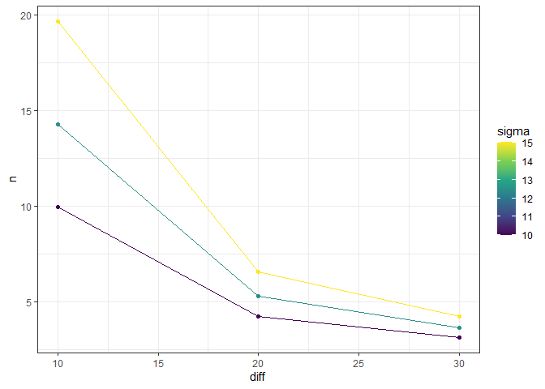

Author: Andree Valle Campos
License: MIT


Overview
The goal of powder is to extend power and sample size calculations:
for more than one set of parameters, and
create tidy output tables and plots from them.
Installation
You can install the developing version of powder using:
if(!require("devtools")) install.packages("devtools")
devtools::install_github("avallecam/powder")Quick example
This is a basic example which shows you how to solve a common problem:
#example("pwr.2p.test")
pwr.2p.test(h=0.3,n=80,sig.level=0.05,alternative="greater")
#>
#> Difference of proportion power calculation for binomial distribution (arcsine transformation)
#>
#> h = 0.3
#> n = 80
#> sig.level = 0.05
#> power = 0.5996777
#> alternative = greater
#>
#> NOTE: same sample sizes
pwr_grid(h=0.3,n=seq(80,90,5),sig.level=0.05,alternative="greater") %>%
pwr_tidy(test_function = pwr.2p.test)
#> # A tibble: 3 x 6
#> n h sig.level alternative query power
#> <dbl> <dbl> <dbl> <chr> <chr> <dbl>
#> 1 80 0.3 0.05 greater power 0.600
#> 2 85 0.3 0.05 greater power 0.622
#> 3 90 0.3 0.05 greater power 0.643
pwr_grid(h=seq(0.3,0.5,0.1),n=seq(80,90,5),sig.level=0.05,alternative="greater") %>%
pwr_tidy(test_function = pwr.2p.test)
#> # A tibble: 9 x 6
#> n h sig.level alternative query power
#> <dbl> <dbl> <dbl> <chr> <chr> <dbl>
#> 1 80 0.3 0.05 greater power 0.600
#> 2 80 0.4 0.05 greater power 0.812
#> 3 80 0.5 0.05 greater power 0.935
#> 4 85 0.3 0.05 greater power 0.622
#> 5 85 0.4 0.05 greater power 0.832
#> 6 85 0.5 0.05 greater power 0.947
#> 7 90 0.3 0.05 greater power 0.643
#> 8 90 0.4 0.05 greater power 0.850
#> 9 90 0.5 0.05 greater power 0.956Core structure
powder consist of three main functions:
pwr_grid: creates a tibble from all combination of input parameters usingtidyr::expand_grid.pwr_tidy: creates abroom::tidy()output from the calculations of all input parameters usingpurrr::pmap.pwr_plot: create aggplotwith input parameters and calculated value (sample size, power or effect size)
More examples
One set of parameters
diff <- 10
sigma <- 10
delta <- diff/sigma
pwr.t.test(d = delta, power = 0.8, type = "one.sample")
#>
#> One-sample t test power calculation
#>
#> n = 9.93785
#> d = 1
#> sig.level = 0.05
#> power = 0.8
#> alternative = two.sided
# sample - power plot
#pwr.t.test(d = delta, power = 0.8, type = "one.sample") %>% plot()More than one set of parameters
sample size
# stata
# power onemean 20, diff(10 20 30) sd(10 12.5 15)
eg1 <- pwr_grid(n = NULL,
diff = c(10,20,30),
sigma = c(10,12.5,15),
d = NULL,
sig.level = 0.05,
power = 0.8,
type = "one.sample",
alternative = "two.sided")
#create tidytable
eg1 %>% pwr_tidy(test_function = pwr.t.test)
#> # A tibble: 9 x 9
#> diff sigma sig.level power type alternative delta query n
#> <dbl> <dbl> <dbl> <dbl> <chr> <chr> <dbl> <chr> <dbl>
#> 1 10 10 0.05 0.8 one.sample two.sided 1 n 9.94
#> 2 10 12.5 0.05 0.8 one.sample two.sided 0.8 n 14.3
#> 3 10 15 0.05 0.8 one.sample two.sided 0.667 n 19.7
#> 4 20 10 0.05 0.8 one.sample two.sided 2 n 4.22
#> 5 20 12.5 0.05 0.8 one.sample two.sided 1.6 n 5.28
#> 6 20 15 0.05 0.8 one.sample two.sided 1.33 n 6.58
#> 7 30 10 0.05 0.8 one.sample two.sided 3 n 3.14
#> 8 30 12.5 0.05 0.8 one.sample two.sided 2.4 n 3.64
#> 9 30 15 0.05 0.8 one.sample two.sided 2 n 4.22
#create ggplot
eg1 %>%
pwr_tidy(test_function = pwr.t.test) %>%
pwr_plot(x = diff,y = n,group = sigma)
power
# stata
# power onemean 20, diff(5 (5) 15) sd(10) n(10 (2) 20)
eg2 <- pwr_grid(n = seq(from = 10,to = 20,by = 2),
diff = seq(from = 5,to = 15,by = 5),
sigma = 10,
d = NULL,
sig.level = 0.05,
#power = 0.8,
type = "one.sample",
alternative = "two.sided")
#create tidytable
eg2 %>% pwr_tidy(test_function = pwr.t.test)
#> # A tibble: 18 x 9
#> n diff sigma sig.level type alternative delta query power
#> <dbl> <dbl> <dbl> <dbl> <chr> <chr> <dbl> <chr> <dbl>
#> 1 10 5 10 0.05 one.sample two.sided 0.5 power 0.293
#> 2 10 10 10 0.05 one.sample two.sided 1 power 0.803
#> 3 10 15 10 0.05 one.sample two.sided 1.5 power 0.987
#> 4 12 5 10 0.05 one.sample two.sided 0.5 power 0.353
#> 5 12 10 10 0.05 one.sample two.sided 1 power 0.883
#> 6 12 15 10 0.05 one.sample two.sided 1.5 power 0.997
#> 7 14 5 10 0.05 one.sample two.sided 0.5 power 0.410
#> 8 14 10 10 0.05 one.sample two.sided 1 power 0.932
#> 9 14 15 10 0.05 one.sample two.sided 1.5 power 0.999
#> 10 16 5 10 0.05 one.sample two.sided 0.5 power 0.465
#> 11 16 10 10 0.05 one.sample two.sided 1 power 0.962
#> 12 16 15 10 0.05 one.sample two.sided 1.5 power 1.00
#> 13 18 5 10 0.05 one.sample two.sided 0.5 power 0.516
#> 14 18 10 10 0.05 one.sample two.sided 1 power 0.979
#> 15 18 15 10 0.05 one.sample two.sided 1.5 power 1.00
#> 16 20 5 10 0.05 one.sample two.sided 0.5 power 0.565
#> 17 20 10 10 0.05 one.sample two.sided 1 power 0.989
#> 18 20 15 10 0.05 one.sample two.sided 1.5 power 1.00
#create ggplot
eg2 %>%
pwr_tidy(test_function = pwr.t.test) %>%
pwr_plot(x = n,y = power,group=diff)
References
Stephane Champely (2018). pwr: Basic Functions for Power Analysis. R package version 1.2-2. https://CRAN.R-project.org/package=pwr
Citation
citation("powder")
#>
#> To cite powder in publications use:
#>
#> Andree Valle-Campos (2020). powder: A Tidy Extension for Power
#> Analysis. R package version 1.0. doi: 10.5281/zenodo.4014201. url:
#> https://avallecam.github.io/powder/.
#>
#> A BibTeX entry for LaTeX users is
#>
#> @Manual{,
#> title = {powder: A Tidy Extension for Power Analysis},
#> author = {Andree Valle-Campos},
#> month = {sep},
#> year = {2020},
#> publisher = {Zenodo},
#> version = {v1.0},
#> doi = {10.5281/zenodo.4014201},
#> url = {https://avallecam.github.io/powder/},
#> }